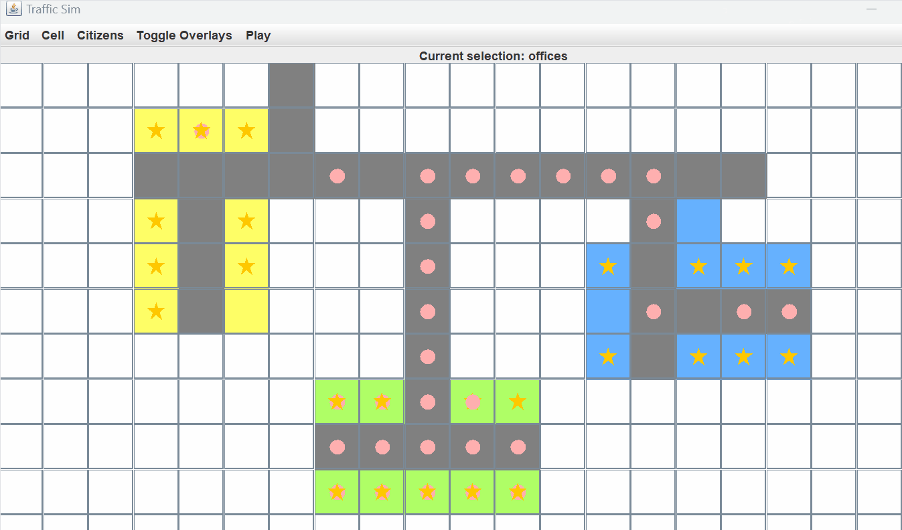

Background
I created this simulator for a computer science AI class, with the goal of simulating traffic based on zones (residential, commercial, and offices). Another goal of mine was to mimic popular game engines and integrate best OOP practices. The app includes a UI and an editor for creating zones, as well several different options for configuring the simulation. It was inspired by the popular Steam game Cities Skylines. This project was created using Java with Swing graphics.
Logic
Much of the logic is handled at the agent level. Each agent has a set of rules that determine where they will travel. For instance, when an agent is spawned in a residential zone, that zone is declared as its home. The agent will then select an office to work in, and based on attraction rates, they will visit a nearby commercial zone.
Of course, there are many other factors that go into the agent's decision making that are not included in this simulation. For instance, agents do not have a concept of time, so there is no rush hour or time when the agent is "sleeping". Traffic is generated by citizens going to work, going home, and visiting nearby shops over and over and over.
You can also select which search algorithm you would like the agents to use. These include A Star, Breadth First, and Depth First searches. The algorithms will travel along a node and edge data structure that I designed and implemented within the road cells.
Overlays
The main appeal of this project is the ability to create zones and watch the traffic flow through overlays. You can toggle the overlays to see the traffic density and attraction of different zones.
Engine
I created my own engine for this project, which is responsible for updating the agents and rendering the graphics. The engine itself is fairly simple. It uses a timer to update the agents' decisions and repaint the grid accordingly.